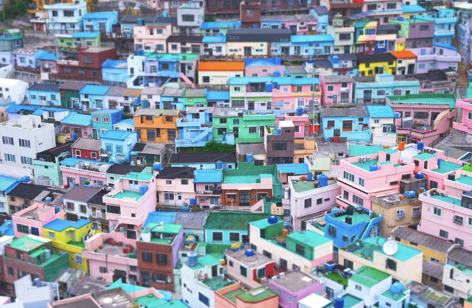

- 낙동강 유채꽃 축제대저생태공원 일대가 노랗게 덮여요.
- 해운대 모래축제해변 위에 커다란 모래 조각 작품이 들어서요.
BUSAN GUIDE
부산,
동네
부터.
바다만 보고 가기엔 아까운 도시.
골목, 노포, 언덕 위 마을까지
부산을 동네 단위로 여행하는 법.

지금 부산 날씨
--°
불러오는 중…
여행 도구
떠나기 전, 그리고 걷는 중에 바로 쓰는 링크 모음
지금 부산에 가면
이번 시즌 Local Lab 큐레이터가 고른 다섯 가지
- 1동백섬 한 바퀴
해운대 해변 끝에서 이어지는 짧은 숲길. 누리마루 하우스와 등대 전망대를 지나 30~40분이면 충분해요.
- 2봉래산 야간 트레킹
영도 한가운데 솟은 산. 해 질 무렵 올라 정상에서 북항과 남항 불빛을 동시에 내려다봐요.
- 3전포 카페 골목
공구 상가 사이로 카페와 디저트 가게가 들어선 동네. 평일 오후가 가장 한산해요.
- 4청사포 다릿돌전망대
바다 위로 뻗은 유리 바닥 전망대. 해변열차나 스카이캡슐과 묶어 동선을 짜기 좋아요.
- 5대저생태공원 가을 억새·팜파스
낙동강변 넓은 공원. 바람 부는 날 오후 햇빛이 비스듬할 때가 가장 예뻐요.
테마별 추천
많이 찾는
부산
처음 부산에 간다면 이 아홉 곳부터.
Local Lab 여행자들이 가장 많이 저장한 장소예요.
계절별 축제·행사
정확한 날짜는 해마다 달라요. 떠나기 전 공식 공지를 꼭 확인하세요.
- 부산바다축제해수욕장 곳곳에서 공연과 해변 프로그램.
- 해수욕장 야간 개장일부 해변은 밤까지 물놀이가 가능해요.
- 부산국제영화제10월, 영화의전당과 해운대 일대.
- 부산불꽃축제광안대교를 배경으로 한 대형 불꽃놀이.
- 동래읍성 역사축제동래 옛 성곽 일대의 역사 재현 행사.
- G-STAR11월, 벡스코에서 열리는 게임 전시회.
- 광복로 겨울빛 트리축제중구 광복로 거리가 조명으로 채워져요.
- 해운대 빛축제구남로와 해변을 잇는 빛 조형물.
코스
추천기
테마와 기간을 고르면 동네끼리 묶어서
아침·오후·저녁 동선을 만들어 드려요.
알아두면 좋은 정보
교통
- 지하철은 교통카드 한 장으로 버스와 환승돼요.
- 해운대·기장 쪽은 동해선이 빨라요.
- 언덕 마을(감천, 영도)은 마을버스를 이용하면 체력을 아낄 수 있어요.
걷기
- 이기대 해안산책로는 편도 약 5km, 2시간 정도 잡으세요.
- 감천문화마을은 내리막 방향으로 걷는 게 편해요.
- 여름 한낮 해안길은 그늘이 적어요. 물을 꼭 챙기세요.
문의처
- 관광 안내 1330 (외국어 통역 포함)
- 부산시 민원 대표 051-120
- 공식 정보 visitbusan.net